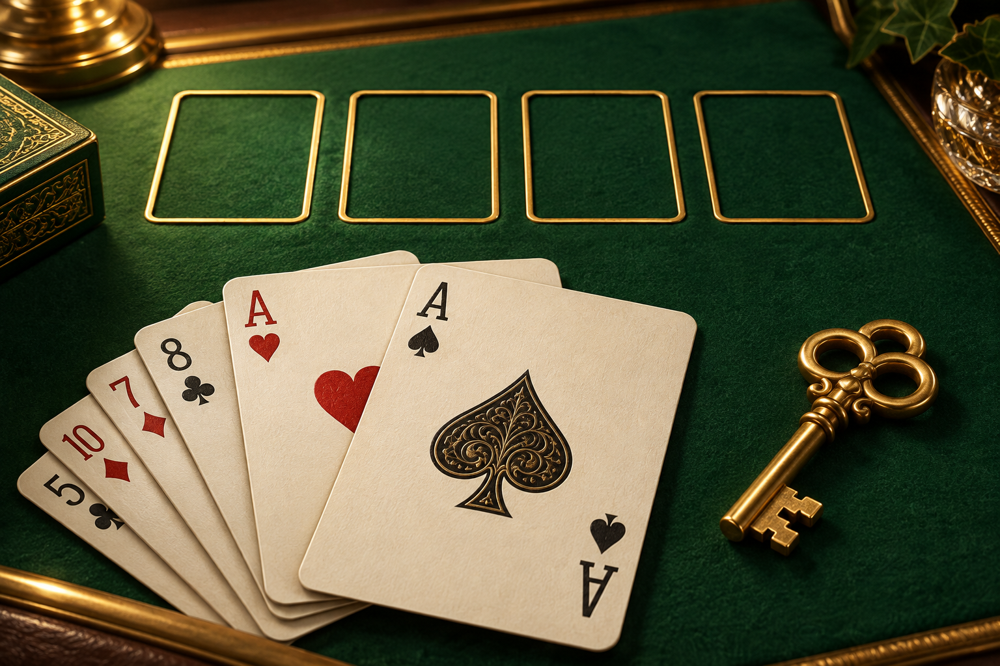

ВСЕ КАРТЫ ПЕРЕД ВАМИ
Свободная ячейка.
Освободите место. Найдите путь к победе.

Ваш ритм игры
Классический режимИграйте спокойно: партия сохраняется автоматически
Лучшее время победы без помощи—
Рекорд и партия — на этом устройстве
Свободная ячейка.
ВРЕМЯ00:00
СЧЁТ0
Автосохранение на этом устройстве